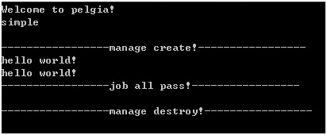
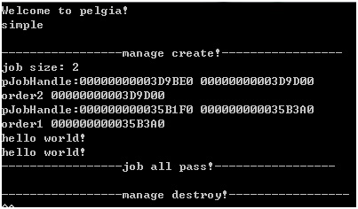

Pelagia is a lockless programming suite from surparallel.org. Use multi-threaded environment, embedded database, multi platform support, multi language support, etc. It provides a complete lock-free programming environment for beginners. Lock-free programming is a programming method which is implemented in multithreaded complex environment by using atomic lock queue and other methods. Traditional lockless programming requires users to master complex multithreading knowledge. Pelagia uses advanced technology from sequential virtual machines. So that users can develop multithreaded software with basic programming knowledge.
Configuration environmentInstall build environment.
Pelagia needs GCC to support C99. Please update GCC to a newer version.
download&CompileGo to the download page on the official website https://surparallel.org/. Find the latest download, this is using Pelagia 0.3.
Using tar to decompress
tar zxf pelagia-release_src_0.3.tar.gz
Go to the Pelagia/src directory
cd pelagia/src
Compiling with the make command
make linux
We will get pelagia.so and Pelagia. Start Pelagia with the command.
./pelagia
Input command simple,We'll get "Hello world!"
simple
Example explanation
We can find the sample file psimple under pelagia/src.
In the example, there are two functions: plg_simple and taskrouting.
Plg_simple is the main function, which is responsible for configuring the environment and starting the service.
Taskrouting is a user task, dealing with user functions.
There are three parts in plg_simple that need to be modified by the user.
char order[10] = { 0 };
strcpy(order, "order");
plg_MngAddOrder(pManage, order, strlen(order), plg_JobCreateFunPtr(TaskRouting));
Add task: Here we add a task named order. The processing function of the task is taskrouting.
Then we add a table named table for this task.
char table[10] = { 0 };
strcpy(table, "table");
plg_MngAddTable(pManage, order, strlen(order), table, strlen(table));
Then we allocate the thread pool, and here we create one thread.
plg_MngAllocJob(pManage, 1);
Then start the system and trigger the call to this task.
plg_MngRemoteCall(pManage, order, strlen(order), (char*)&pEvent, sizeof(void*));
Next, in the task started. We set variable V to table.
char table[10] = { 0 };
strcpy(table, "table");
char key[10] = { 0 };
strcpy(key, "key");
char v[100] = { 0 };
strcpy(v, "hello world!");
//Set data to table
plg_JobSet(table, strlen(table), key, strlen(key), v, strlen(v) + 1);
And call plg_JobGet function to get this variable. And print the results to the screen.
Modification example
Let's modify this example a little bit to make it multithreaded.
First we add taskrouting2. Reading data in table in taskrouting2.
static int TaskRouting2(char* value, short valueLen) {
void* pEvent;
memcpy(&pEvent, value, valueLen);
char table[10] = { 0 };
strcpy(table, "table");
char key[10] = { 0 };
strcpy(key, "key");
unsigned int len = 0;
//get data
void* ptr = plg_JobGet(table, strlen(table), key, strlen(key), &len);
if (ptr) {
printf("%s\n", (char*)ptr);
free(ptr);
}
plg_EventSend(pEvent, NULL, 0);
printf("-----------------job all pass!-----------------\n");
return 1;
}
Then we name taskrouting2 order2 and add it to the system.
strcpy(order, "order2");
plg_MngAddOrder(pManage, order, strlen(order), plg_JobCreateFunPtr(TaskRouting2));
And modify taskrouting1 to call order2 instead of exiting after taskrouting1 runs.
char order[10] = { 0 };
strcpy(order, "order2");
plg_JobRemoteCall(order, strlen(order), value, valueLen);
Then change the core parameter of to 2, indicating that you want to start two threads.
plg_MngAllocJob(pManage, 2);
The execution order changes to plg_simple calling Order1, Order1 calling order2, and then returning to the main function to finish execution. The results are as follows.
We have two outputs that we expect.Using plg_MngPrintallJobOrder(pManage); you can see that two orders are configured into different threads respectively.
Here you have completed the first lock-free programming.You can find all the examples in src/psimple.c.